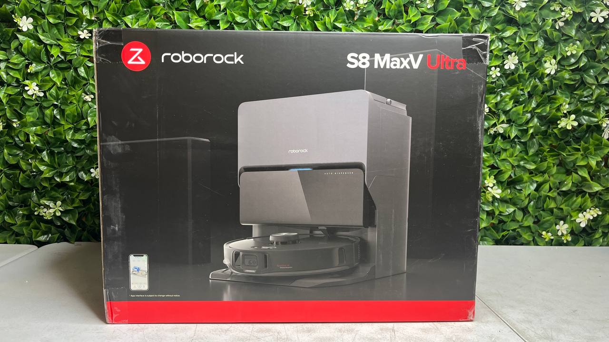

Robot vacuums have quickly become one of the most popular smart home appliances. Instead of manually vacuuming the floor, these small automated cleaners move around your home and remove dust, dirt, and debris automatically.
But with dozens of brands and models on the market, choosing the right robot vacuum can be confusing. Some models include advanced navigation systems, while others focus on simple daily cleaning.
This guide explains how robot vacuums work, compares popular brands, and highlights what real users often say about them in online discussions.

Robot vacuums save time by automatically cleaning floors while you focus on other tasks.
They work well in apartments, homes with hard floors, and houses where daily maintenance cleaning is helpful.
Improved sensors, better battery life, and smart mapping technology made robot vacuums much more reliable in recent years.
Several brands dominate the robot vacuum market. Each focuses on different strengths such as navigation technology, suction power, or smart home integration.
Many of these brands regularly appear in product comparisons from sites like Consumer Reports and Wirecutter.
One of the biggest differences between robot vacuums is the navigation system. Early models moved randomly around a room, but modern models often map your home.
Three common navigation types include:
LiDAR systems are often considered the most accurate because they scan the room using a rotating laser sensor. This allows the robot to build a detailed map of the home.
Online communities often discuss robot vacuum performance, and Reddit threads regularly compare different brands.
Many users say Roborock models perform very well for navigation and cleaning efficiency. Roomba is often praised for reliability and long-term durability.
Some users report that cheaper models can struggle with thick carpets, pet hair, or complex floor layouts. Because of this, many buyers recommend choosing a robot vacuum with smart mapping rather than a random navigation system.
Source: Reddit Robot Vacuum Discussions
Some buyers choose a robot vacuum based only on price, but several factors can affect performance.
Understanding these features helps buyers choose a robot vacuum that fits their home layout and cleaning needs.
Robot vacuums can sometimes cost several hundred dollars at retail stores. However, some models appear in liquidation inventory, open-box returns, or overstock batches.
This means it is sometimes possible to buy the same appliances at a significantly lower price than traditional retail stores.
If you want to explore robot vacuums currently available in our inventory, you can browse our catalog below.
Browse Robot Vacuum Deals More Home Appliance DealsInventory changes regularly, and some products appear at prices significantly below standard retail.
Robot vacuums have improved significantly over the past decade. Modern models include better sensors, smarter navigation systems, and stronger cleaning power.
Whether you choose a premium brand or a more affordable model, understanding how robot vacuums work can help you find a device that fits your home and cleaning routine.
You may also find our guide helpful: How to Choose a Coffee Machine for Your Home .